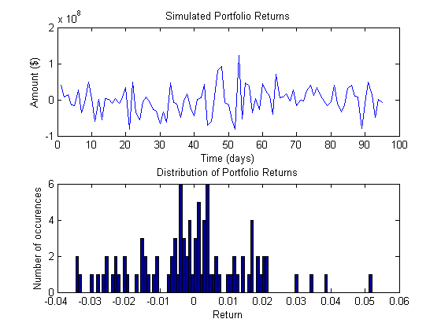
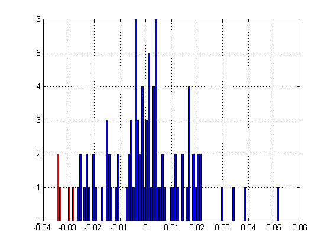
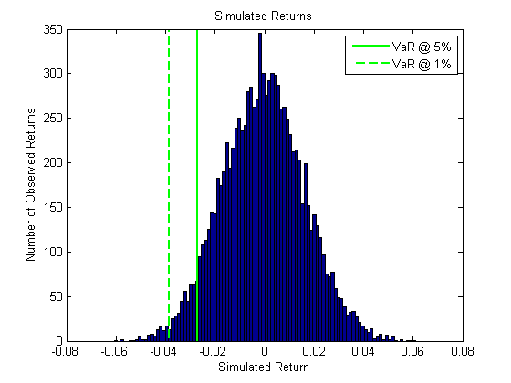
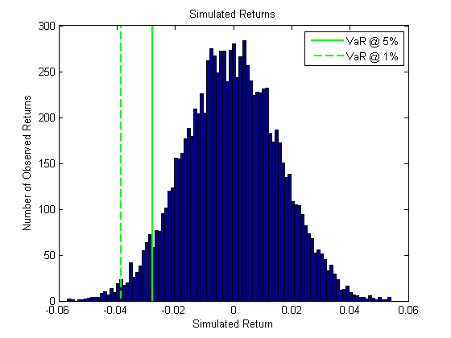

计算投资组合风险价值（VaR)-2
本程序使用三种不同的方法计算投资组合风险价值 具体方法为：
- 历史模拟
- 参数模型
- 蒙特卡罗模拟
Contents
Import data from Excel
%从Excel中读取数据 %文件CSI300.xlsx，中有三个表，分别为沪深300指数成分股价格序列， %沪深300指数成分股权重（股数）、沪深300指数价格。 % [num,txt]=xlsread('CSI300.xlsx','CSI300'); % CSI300Dates=txt(4:end,1);%时间 % CSI300Tickers=txt(2,2:end);%股票名称 % CSI300HistPrices=num;%成分股历史价格 % [num,txt]=xlsread('CSI300.xlsx','Portfolio Positions'); % positionsPortfolio=num;%positionsPortfolio 股票数量 % [num,txt]=xlsread('CSI300.xlsx','CSI300-Index'); % pricesIndex=num;%指数价格 % save CSI300Prices CSI300Dates CSI300Tickers CSI300HistPrices positionsPortfolio pricesIndex
Convert price series to return series and visualize historical returns
将数据转为收益率序列并画出历史收益曲线 如果数据已储存（非第一次运行）
clear variables %清空变量空间 load('CSI300Prices.mat')
Calculate return from price series
%根据价格序列计算收益率 returnsSecurity = tick2ret(CSI300HistPrices,[],'Continuous');
Historical Simulation visually
历史模拟方法，计算投资组合价值
pricesPortfolio = CSI300HistPrices*positionsPortfolio; % 投资组合的收益率 returnsPortfolio = tick2ret(pricesPortfolio, [], 'continuous'); % 投资组合最后一日的市值 marketValuePortfolio = pricesPortfolio(end); %历史数据的Hist图 simulationResults = visualizeVar(returnsPortfolio, marketValuePortfolio); %具体见visualizeVar程序
Historical Simulation programatically
%历史模拟法程序 % 收益率在 1% 与 5% 的置信水平 confidence = prctile(returnsPortfolio, [1 5]); % 历史模拟法的可视化 figure; hist2color(returnsPortfolio, confidence(2), 'r', 'b'); %具体见hist2color程序 %历史方法 99% 与 95% 水平的风险价值 hVar = -marketValuePortfolio*confidence; displayVar(hVar(1), hVar(2), 'hs'); %具体见displayVar程序
Value at Risk method: Historical Simulation Value at Risk @ 99% = $82,091,887.30 Value at Risk @ 95% = $66,214,101.16
Parametric
%参数模型 % 计算 99% 与 95% 水平的风险价值，假设收益率服从正态分布。 pVar = portvrisk(mean(returnsPortfolio), std(returnsPortfolio), [.01 .05],... marketValuePortfolio); %画图 displayVar(pVar(1), pVar(2), 'p')
Value at Risk method: Parametric Value at Risk @ 99% = $90,981,251.06 Value at Risk @ 95% = $64,856,171.58
Monte Carlo using portsim
%蒙特卡罗方法 [marketValuePortfolio, weightsPortfolio] = getPortfolioWeights(... CSI300HistPrices, positionsPortfolio); %具体参见getPortfolioWeights程序。 numObs = 1; % 样本个数 numSim = 10000; % 模拟次数 % 预期期望与方差 expReturn = mean(returnsSecurity); expCov = cov(returnsSecurity); %rng Control the random number generator rng(12345) %生成资产收益率矩阵 simulatedAssetReturns = portsim(expReturn,expCov,numObs,1,numSim, 'Exact'); % 指数收益率 simulatedAssetReturns = exp(squeeze(simulatedAssetReturns))-1; mVals = weightsPortfolio*simulatedAssetReturns; mVar = -prctile(mVals*marketValuePortfolio, [1 5]); % 可视化模拟组合 plotMonteCarlo(mVals) % 风险价值 displayVar(mVar(1), mVar(2), 'mcp')
Value at Risk method: Monte Carlo Simulation (portsim) Value at Risk @ 99% = $91,176,882.64 Value at Risk @ 95% = $64,618,603.59
使用GBM 对象进行蒙特卡罗模拟
expReturn = mean(returnsSecurity); sigma = std(returnsSecurity); correlation = corrcoef(returnsSecurity); X = CSI300HistPrices(end,:)'; dt = 1; numObs = 1; % Number of observation numSim = 10000; % Number of simulation rng(12345) GBM = gbm(diag(expReturn), diag(sigma), 'Correlation', correlation, 'StartState', X); % Simulate for numSim trials simulatedAssetPrices = GBM.simulate(numObs, 'DeltaTime', dt, 'ntrials', numSim); simulatedAssetReturns = tick2ret(simulatedAssetPrices, [], 'continuous'); % simulatedAssetReturns = squeeze(simulatedAssetReturns); simulatedAssetReturns = exp(squeeze(simulatedAssetReturns))-1; gbmVals = weightsPortfolio*simulatedAssetReturns; gbmVar = -prctile(gbmVals*marketValuePortfolio, [1 5]); % Visualize the simulated portfolios plotMonteCarlo(gbmVals) % Value at Risk displayVar(gbmVar(1), gbmVar(2), 'mcg') % [EOF]
Value at Risk method: Monte Carlo Simulation (GBM) Value at Risk @ 99% = $91,413,589.30 Value at Risk @ 95% = $65,665,337.55